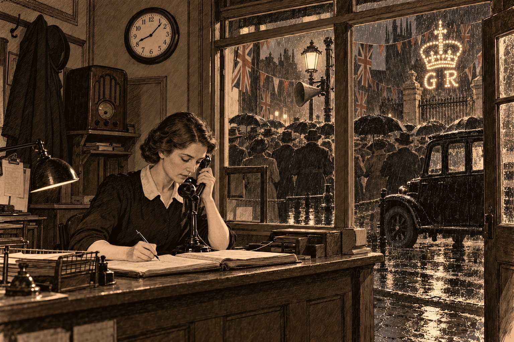

Свидетельница

16.40. Вокзал — Стипп-Хилл. Мистер и миссис Морс из Стамфорда.
Вёз С. М. Оплаты не брать.
Констанс Фэрклаф второй год вела книгу вызовов в конторе «Доррингтон. Такси и прокат автомобилей» и записывала в неё всё, что можно было записать, и ничего сверх того. Время она ставила по часам над конторкой, а часы каждый вечер сверяла по радио, по шести коротким сигналам. Мистер Доррингтон говорил, что такой книги нет даже у начальника вокзала, и это была правда: начальник вокзала заходил однажды за папиросами и сам это сказал.
Во вторник, одиннадцатого мая, она записала строчку про мистера и миссис Морс заранее, в четыре часа, потому что мистер Доррингтон велел не брать с них денег, а к вечеру мог и забыть. Контора стояла на Сент-Мэри-стрит, наискосок от вокзала Большой Северной дороги, которую уже четырнадцать лет полагалось называть Лондонской и Северо-Восточной, но в Линкольне так её никто не называл. Над окном висели три флага, над воротами двора, где был гараж, — ещё пять, и все они к коронации были новые.
— Иди, Конни, — сказал мистер Доррингтон. — Посмотри на свёкров, пока они тебя не видят. Потом будет поздно. Телефон я покараулю.
Он был плотный, красный, в клетчатой кепке, которую не снимал и в конторе, и говорил всегда так, будто на другой стороне улицы у него есть собеседник поглуше. Когда он бывал трезв, он считал пенсы; когда выпивал, раздавал шиллинги. Сегодня он был трезв, и всё-таки отдавал целую поездку даром, и Констанс записала это без пометок, как записывала всё.
Она перешла улицу и встала на перроне у колонны, откуда видно было двери вагонов. Сирил стоял у самого края, в шофёрской кепке и в старом морском бушлате, который он носил и в мае; он был выше всех на перроне, кроме одного человека, и этот человек вышел из третьего вагона.
Это был высокий худой старик в чёрном, с длинным бритым лицом и белыми волнистыми волосами под широкополой шляпой. На правую ногу он ступал осторожно и опирался на палку. За ним вышла маленькая женщина в сером, тоже седая, с корзинкой в одной руке и зонтиком в другой; она сошла по ступеньке, подождала, пока муж найдёт палкой твёрдое место, и только потом посмотрела на сына. Констанс заметила, что всё время, пока они шли по перрону, миссис Морс смотрела на мужа так, словно проверяла, хорошо ли он дышит. Сама она при этом дышала тяжело и часто, как дышат после бега, хотя не бежала. Констанс отметила это и не стала ничего к этому прибавлять. Её так учили: видишь — запомни; не знаешь почему — не придумывай.
Сирил оглянулся, нашёл её у колонны и махнул рукой. Ей пришлось выйти.
— Это Констанс, — сказал он.
Старик снял шляпу и посмотрел на неё так, как смотрят на хорошо отпечатанную страницу: не торопясь и с удовольствием. Миссис Морс поставила корзинку на перрон и поцеловала Констанс в обе щеки.
— Он писал про вас четыре раза, — сказала она. — И все четыре раза про погоду.
— Погода в марте была плохая, — сказала Констанс.
Священник засмеялся. Смех у него был неожиданный для такого длинного и строгого лица — громкий, молодой, как будто кто-то в пустой церкви вдруг уронил книгу. Сирил покраснел. Констанс не поняла, что смешного она сказала: в марте действительно шли дожди, и Сирил несколько раз отвозил её домой, потому что у неё не было зонтика, а у мистера Доррингтона было четыре машины.
В конторе мистер Доррингтон встал из-за конторки, снял наконец кепку и сказал, что для него честь, что не каждый день к нему в контору приходит духовенство, разве что на похороны, а на похороны он даёт свой лучший «Хамбер» и сам за рулём. Потом спохватился, что про похороны говорить не к месту, и сказал, что на свадьбу даст машину с лентами и денег не возьмёт.
— Ей-богу, не возьмёт, — сказал за его спиной старый Уолли Пинчбек. — Провалиться мне, сэр, если он хоть раз взял деньги со своих. А Сирила мы тут все любим как сына.
Уолли возил людей в Линкольне тридцать пять лет, сначала на лошади, потом на моторе, и божился через слово, как другие люди кашляют. Констанс не помнила ни одного его рассказа без «ей-богу» и «провалиться мне». Когда он это сказал, священник быстро взглянул на него — так взглядывает регент на певчего, который фальшиво взял ноту, — и тут же улыбнулся, будто нота была не такая уж фальшивая или певчий был очень старый. Констанс запомнила этот взгляд, потому что не поняла его. Сирила в конторе любили, но не все и не как сына: молодой Рег Хаддон, второй шофёр, с осени не говорил с ним иначе как о бензине.
Дверь отворилась, и вошёл крупный седой человек в сером костюме, с часовой цепочкой поперёк жилета и с таким голосом, что в окне задрожало стекло.
— Фрэнк! Завтра в четыре, не забудь. Если у тебя будет хуже, чем у «Барбакана», я, Бог свидетель, не посмотрю, что мы знакомы двадцать лет.
Это был мистер Хорас Беллами, член городского совета. Его фирма «Беллами и сын, электрические работы» на Хай-стрит провела свет в половину домов Нижнего города, а сам он председательствовал и в комитете, который выдаёт лицензии на извоз, и в уличном комитете по коронации; по воскресеньям он проповедовал в уэслианской часовне, и, говорили, проповедовал хорошо. Завтра он должен был обходить улицу и судить, у кого лучше украшения.
Мистер Доррингтон представил ему гостей. Мистер Беллами пожал священнику руку обеими руками и сказал, что рад видеть в Линкольне отца такого молодого человека.
— Я помню вашего сына, — сказал он. — Его заявление на лицензию проходило через наш комитет. Всё там было как надо.
Сирил промолчал, и Констанс увидела, что у него на щеке дёрнулся мускул. Священник смотрел на мистера Беллами спокойно и, кажется, с интересом, а не так, как смотрел на Уолли. Мистер Беллами пожелал всем хорошего праздника и ушёл, и стекло ещё немного звенело после него.
От конторы Сирил довёз их до подножия Стипп-Хилла, а дальше миссис Морс сказала, что хочет пройти пешком.
— Двадцать лет слушаю про этот холм, — сказала она. — Хочу посмотреть сама.
Стипп-Хилл — самая крутая улица в Линкольне, и никто из живущих на ней не называет её иначе как «наша лестница». Она поднимается от Нижнего города к собору между старыми домами, которые стоят друг над другом, как люди на ступеньках. Мастерская Фэрклафов была почти наверху.
Миссис Морс останавливалась три раза. В первый раз она сказала, что хочет посмотреть на собор. Во второй — что хочет ещё раз посмотреть на собор. В третий ничего не сказала, только улыбнулась Констанс и показала зонтиком вверх. Собор все три раза был у неё за спиной: она стояла лицом к Нижнему городу. Священник с сыном шли впереди и спорили, сколько у собора колоколов, и не оборачивались. Констанс шла рядом с миссис Морс и несла её корзинку.
Отец Констанс, Уильям Фэрклаф, встретил их в дверях мастерской, в фартуке, сутулый, с очками на лбу. В мастерской пахло клеем, кожей и бумагой, на столах лежали стопки сшитых тетрадей, а под прессом стояла толстая книга в новом переплёте — приходская книга из церкви святого Свитуна. Священник подошёл к ней прежде, чем к хозяину, и потрогал корешок.
— У меня есть такая же, — сказал он. — Только моя, с девяносто четвёртого года, уже разваливается.
— Пришлите, — сказал мистер Фэрклаф. — Посмотрю.
Они заговорили о корешках, о льняных нитках и о том, почему старые книги переживают новые. Констанс оставила их и повела миссис Морс наверх, к бабушке.
Бабушка, миссис Ребекка Фэрклаф, сидела у окна в сером платье и белой кружевной косынке, прямая, как спинка её стула. Таких платьев давно не носила ни одна квакерша в Линкольне, но бабушке было восемьдесят три, и она носила то, к чему привыкла. Миссис Морс остановилась в дверях отдышаться, и бабушка посмотрела на неё.
— Садись, Агнес, — сказала бабушка. — Ты устала с дороги.
Миссис Морс чуть подняла брови и тут же села. Квакеры старого закала говорили «ты» всем: королю, если бы встретили короля, судье, торговцу и нищему. Они считали, что «вы» придумано для чинов, а у Бога чинов нет. В доме Фэрклафов так говорила только бабушка. Констанс говорила «вы», как все, но никогда не поправляла бабушку перед гостями, и гости обыкновенно сначала удивлялись, а потом им это нравилось.
Миссис Морс понравилось сразу.
— Спасибо, Ребекка, — сказала она. — Я действительно устала.
Бабушка ничего не ответила и долго смотрела, как гостья дышит.
За ужином перед едой помолчали. Так было заведено у Фэрклафов: никто не читал молитвы вслух, все просто сидели молча, пока бабушка не поднимет голову. Священник, который дома сам благословлял стол, опустил голову вместе со всеми, а когда бабушка подняла свою, сказал вслух, один на весь стол: «Аминь». Рег Хаддон бы засмеялся. Мистер Фэрклаф не засмеялся.
— Хорошее слово, — сказала бабушка. — Мы его тоже знаем.
После ужина Констанс вышла со священником на крыльцо. Внизу, под холмом, весь Нижний город был во флагах, и на некоторых улицах уже пробовали цветные лампочки, которые завтра, в день коронации, должны были гореть до полуночи. Над крышами стояла башня собора, и над ней — ещё светлое небо.
— Мисс Фэрклаф, — сказал священник. — Я слушаю вас весь вечер и не могу понять одной вещи. Вы ни разу не сказали «наверное».
— Если я не знаю, — сказала Констанс, — я говорю: не знаю.
— А если вы знаете наполовину?
— Тогда я говорю, какую половину.
Он снова посмотрел на неё как на хорошо отпечатанную страницу и сказал, что в его семье есть старая вещь, на которой вырезано греческое слово, и это слово значит «клятва», и что он теперь понимает, почему сын в письмах писал только про погоду.
— Почему? — спросила Констанс.
— Потому что про вас нельзя было написать ничего, что было бы правдой наполовину, — сказал он. — А целую правду в письме не напишешь.
Ночью, уже в постели, Констанс подумала, что, если бы это была её книга, она записала бы в неё так: «Миссис Морс трижды останавливалась на Стипп-Хилле посмотреть на собор. Собор все три раза был у неё за спиной». Но это была не её книга, и она ничего не записала.
⁂
9.15. Бейлгейт — собор, старая миссис Тэлбот, на службу.
Вёз У. П. Обратно к часу.
В среду, двенадцатого мая, контора открылась в восемь, как всегда: король коронуется раз в жизни, а люди ездят на вокзал каждый день. Констанс пришла без четверти восемь и застала на улице рабочих мистера Беллами. Они стояли на лестнице у фонаря против отеля «Барбакан» и привинчивали к нему громкоговоритель — большой раструб, похожий на граммофонную трубу, только серый и без цветов. От раструба провод шёл в окно отеля, где стоял приёмник. Такие трубы в этот день висели, говорят, по всей Англии, чтобы никто не остался без короля.
К половине одиннадцатого вся Сент-Мэри-стрит стояла под этой трубой. Из Лондона передавали службу в Вестминстерском аббатстве. Мужчины сняли шляпы, женщины держали детей за руки, чтобы те не бегали, и улица стояла так тихо, что было слышно, как на вокзале паровоз пускает пар. Священник с миссис Морс спустились с холма к девяти и теперь стояли у дверей конторы; Констанс вынесла миссис Морс стул, и та села, не споря.
Констанс слушала из дверей и прислушивалась, не зазвонит ли телефон. Служба шла долго, и она не всё понимала: там были слова, которые за всю жизнь говорят над одним-единственным человеком. Потом архиепископ спросил короля, торжественно ли он обещает и клянётся править своими народами по их законам и обычаям, и король ответил, что торжественно обещает. Потом, как сказал диктор, он поцеловал Библию и произнёс: «То, что я здесь обещал, исполню и сохраню. Да поможет мне Бог».
Священник стоял рядом с ней, сняв шляпу, и Констанс заметила, что он слушает иначе, чем остальные: чуть наклонив голову, как настройщик слушает струну.
— Мисс Фэрклаф, — сказал он тихо, когда хор запел. — Вы ведь не клянётесь. Что вы думаете о короле, который клянётся?
Констанс подумала.
— Если человек всегда говорит правду, — сказала она, — ему незачем клясться. А если не всегда, клятва ему не поможет. Так говорит бабушка, и так написано у апостола Иакова.
— А король?
— Король обещает не одному человеку, а сразу всем. Может быть, тут иначе. Я не знаю.
Священник посмотрел на неё с тем же удовольствием и сказал, что за сорок с лишним лет слышал много проповедей о клятвах и ни одной, которая кончалась бы словами «я не знаю», и что это, пожалуй, единственная честная.
Мистер Беллами стоял у самого фонаря, под трубой, без шляпы, и пел с хором — громче хора, как поют люди, уверенные, что Бог стоит где-то в задних рядах и иначе не услышит.
К обеду служба кончилась. Пошёл мелкий дождь, потом перестал, и улица начала праздновать. Посреди мостовой, где по будням стояли такси, поставили длинные столы на козлах, накрыли их простынями и флагами, и в два часа дети с Сент-Мэри-стрит и с окрестных переулков сели пить чай. Каждому дали фарфоровую кружку с портретами короля и королевы; кружки раздали ещё в пятницу в школе, но дети принесли их с собой, чтобы пить из своих, и некоторые не пили, а только держали. Мистер Доррингтон дал на чай два фунта и ходил вдоль столов с кувшином лимонада, а из соседнего паба ему выносили пиво, и к трём часам он раздавал уже не шиллинги, а полукроны.
В это время Сирил работал над воротами. Ещё в понедельник он сколотил из реек большую корону, обтянул красной материей и вставил в неё тридцать шесть цветных лампочек, а под короной вывел лампочками две буквы — «G R», «Георг, король». Теперь он тянул к ней провод из гаража. Священник стоял внизу, держал лестницу и задавал вопросы, на которые сын отвечал, не глядя вниз.
— Откуда ток?
— От выключателя в гараже. Там коробка у двери. Я подсоединился к проводам ещё до выключателя, так что корона горит сама по себе, а свет в гараже включается, как раньше.
— А если пойдёт дождь?
— Лампочки не боятся дождя, папа. Дождя боятся люди.
Священник сказал, что электричество — единственная вещь на свете, в которую он верит, совершенно её не понимая, и что, к счастью, оно не требует от него понимания, а только чтобы он не совал пальцы куда не надо. Сирил засмеялся. Констанс смотрела на них из окна конторы и записывала в книгу, что в 14.40 позвонила миссис Хинд с Монкс-роуд и заказала машину на завтра к девяти.
В четыре пришёл судить мистер Беллами с уличным комитетом: две дамы в шляпах, мистер Пайкрофт из обувного магазина и молодой священник из церкви святой Марии, который во всём соглашался с мистером Беллами. Они прошли всю улицу от переезда до моста, останавливаясь у каждого дома. У ворот Доррингтона мистер Беллами задрал голову, долго смотрел на корону и сказал, что это смело.
— Кто ставил? Вы, мистер Морс? От какого щита?
— От выключателя в гараже, сэр.
— Покажите-ка. Бог свидетель, я сорок лет вожусь с проводкой и ни разу не видел, чтобы короля подключали к гаражу.
Все засмеялись. Мистер Беллами вошёл с Сирилом в гараж и пробыл там минуты три. Констанс видела, как они вышли: мистер Беллами вытирал пальцы платком, а Сирил был красный. Комитет пошёл дальше. Первый приз потом дали «Барбакану», второй — мистеру Пайкрофту, у которого в витрине стоял король, склеенный из ботинок.
Ссора случилась в половине пятого, во дворе, и её слышала вся улица, потому что мистер Доррингтон иначе не умел.
Он вошёл в ворота с кружкой в руке, увидел Сирила, который сматывал остаток провода, и сказал, что комитет ему всё рассказал. Что в Ньюмаркете, у мистера Плейделла, Сирила уволили за нечестность — без рекомендаций. Что он, Доррингтон, держит у себя в сейфе его лицензию, как положено по закону, и завтра же отнесёт её в комитет со своим письмом, и посмотрит, станут ли там продлевать бляху человеку, который поставил на чужие деньги.
— Тебе ли возить людей! — кричал он. — У меня люди в машине сумки оставляют! Кошельки! Я тебя взял как сына, а ты мне ни слова!
На улице стало тихо, как утром под трубой. Констанс стояла у окна конторы, и у неё были холодные руки. Священник стоял у ворот. Миссис Морс сидела на своём стуле у двери и не встала.
Сирил положил моток провода на землю.
— Да, — сказал он. — Уволен. Я поставил сорок фунтов от себя, а записал их на хозяйский счёт, и проиграл. Это было осенью тридцать пятого. С прошлого лета я отдаю мистеру Плейделлу по десять шиллингов в неделю, и осталось ещё тридцать две недели. Мисс Фэрклаф это знает с марта. Вы меня не спрашивали, я вам не говорил. Это всё.
Он сказал это негромко и не опуская головы, и Констанс в первый раз в жизни услышала, как человек говорит правду на всю улицу и улица не знает, что с этим делать. Священник смотрел на сына. Лицо у него было такое, будто он слушал хорошо спетый псалом в плохой день.
Мистер Доррингтон ещё покричал, но уже тише, — что знает, мол, мисс Фэрклаф, квакерша, они все всё знают и все молчат, — и ушёл в контору. Сирил поднял моток и пошёл в гараж.
Через четверть часа Констанс увидела в окно, как мистер Доррингтон стоит у ворот с мистером Беллами. Мистер Беллами вернулся, обойдя улицу. Что они говорили, ей не было слышно: на соседнем дворе заводили граммофон. Она видела только, что говорит больше мистер Доррингтон, а мистер Беллами слушает, что мистер Доррингтон сначала о чём-то просит, наклонившись к нему, потом смеётся и хлопает мистера Беллами по плечу, и что мистер Беллами уходит не попрощавшись и с таким лицом, какое бывает у человека, который на ходу складывает в уме длинный столбец.
Вечером, перед тем как стемнело, Сирил зашёл в контору и сел на край конторки.
— Я сам виноват, — сказал он. — Надо было сказать ему, когда нанимался.
— Он не спросил, а ты не сказал, — сказала Констанс. — Это не ложь.
— Но и не вся правда.
— Нет, — сказала она. — Не вся.
Она подумала, что он ждёт, чтобы она сказала что-нибудь ещё, но больше ничего правдивого ей в голову не пришло, и она промолчала. Сирил кивнул, как будто она сказала что-то очень хорошее, и пошёл зажигать корону.
⁂
20.03. «Сарацинова голова», к 8.30. Просили самого мистера Д.
Голос как через шарф. Перед голосом — тишина, потом щелчок.
К семи снова пошёл дождь, и на этот раз не перестал. Улица не разошлась. Столы унесли, флаги намокли и висели, как бельё, но под фонарём у «Барбакана» стояли зонты, сначала десятка два, потом больше, потому что в восемь по радио должен был говорить король. Корона над воротами горела. Тридцать шесть цветных лампочек отражались в мокрой мостовой, и казалось, что под короной лежит ещё одна, разбитая на куски.
Рег Хаддон уехал в двадцать минут восьмого с заказом в Слифорд и вернуться должен был не раньше десяти. Уолли праздновал с полудня и теперь сидел в пабе на углу, откуда было слышно, как он поёт. Мистер Доррингтон стоял с кружкой у двери паба, под вывеской, где было сухо. Сирил стоял с отцом у самого фонаря. Миссис Морс сказала, что постоит где-нибудь под навесом, где не капает, и ушла за угол отеля; Констанс видела, как она уходит, медленно, держа зонтик не над головой, а как палку.
Констанс осталась в конторе. Кто-то должен был отвечать на звонки: в праздник люди звонили чаще, потому что ехать им хотелось больше, а идти меньше. У мистера Доррингтона в конторе был свой приёмник, ореховый, с круглым окошком, и она включила его тихо, чтобы слышать и короля, и телефон. В окно ей видны были ворота с короной, двор за ними, тёмный гараж в глубине двора и спины людей под фонарём.
Без двух минут восемь мистер Беллами встал на стул под фонарём, снял шляпу и сказал на всю улицу:
— Тише! Король!
Он сказал это так, как говорят в часовне «помолимся», и улица послушалась. Мистер Беллами слез со стула и отошёл за спины, как хозяин, который пропускает гостей вперёд; Констанс потеряла его среди зонтов. Потом в трубе щёлкнуло, и заговорил король.
Он говорил медленно. Иногда он останавливался, и тогда останавливалась вся улица. Констанс видела в окно, как люди под зонтами переставали шевелиться, когда голос замолкал, и снова начинали, когда он продолжал, — так, будто это у них, а не у него, перехватывало дыхание. Она сама поймала себя на том, что держит ручку над книгой и не дышит. Слов она потом почти не помнила. Она помнила, что король благодарил людей за любовь и верность. И помнила одно место: король сказал, что в этот праздник не забывают тех, кто живёт под тенью болезни или беды, — и на слове «беды» остановился и долго не мог его выговорить, и всё-таки выговорил, и улица выдохнула вся сразу, как один человек.
В восемь ноль одну корона над воротами мигнула.
Все тридцать шесть лампочек разом потускнели, словно корону на миг накрыли ладонью, и тут же загорелись снова. Это заняло меньше секунды. Никто на улице не обернулся: все стояли лицом к трубе. Констанс посмотрела на часы над конторкой и записала в книгу на полях: «20.01 — корона мигнула». Она записывала так любую неисправность, чтобы утром сказать мистеру Доррингтону; он говорил, что у неё не книга, а судовой журнал.
В восемь ноль три зазвонил телефон.
Она сняла трубку и сказала:
— Доррингтон, такси.
В трубке было тихо. Не пусто, а тихо — так бывает, когда на том конце кто-то есть и молчит. Она сказала ещё раз:
— Доррингтон, такси.
В трубке щёлкнуло, и мужской голос, глухой, как будто говорили через шарф, сказал:
— Машину к «Сарациновой голове», к половине девятого. Пусть едет сам Доррингтон. Молодым сегодня веры нет.
— На чьё имя? — спросила Констанс.
Но там уже повесили трубку. В той трубке, пока голос говорил, тоже говорил король — тот же голос, что за окном и в ореховом приёмнике. Она записала всё, что услышала, теми же словами, в том же порядке, и время — 20.03, — и только потом подумала, что заказывать машину во время речи короля — странное дело. Но люди в праздник делают странные дела.
Она надела плащ и вышла под дождь. Мистер Доррингтон стоял у двери паба и слушал короля, держа кружку на весу, как будто боялся, что король услышит, если он поставит её на подоконник.
— К «Сарацину»? — шёпотом переспросил он. — Сам? Кто?
— Не назвался.
— Сам, значит, — сказал мистер Доррингтон, и Констанс увидела, что ему это приятно. — Знают, кто в Линкольне возит. Дослушаю короля — и поеду. Не каждый день, Конни.
Она вернулась в контору. Король кончил говорить в десять минут девятого. В трубе заиграли гимн, и мистер Беллами — он опять стоял у фонаря, на этот раз без стула, — запел «Боже, храни короля» так, что его было слышно сквозь стекло, и улица запела за ним. Констанс не пела: квакеры не поют гимнов, да и петь в пустой конторе было бы глупо. Она стояла у окна.
В восемь двенадцать мистер Доррингтон прошёл мимо её окна в ворота, под короной, и пересёк двор к гаражу. Она видела, как он открыл дверь гаража и шагнул в темноту.
В восемь тринадцать корона погасла.
На этот раз она не мигнула, а погасла совсем, вся сразу, и больше не зажглась. Во дворе стало темно. На улице кто-то засмеялся и сказал: «Ну вот, доконал его дождь», — и ещё кто-то сказал, что у «Барбакана» не погасло, потому что у «Барбакана» ставил Беллами, а тут мальчишка. Констанс записала: «20.13 — погасла корона». Она ждала, что сейчас из ворот выйдет «Хамбер» с мистером Доррингтоном за рулём. Он не выходил.
В двадцать минут девятого она подумала, что мотор не заводится в сырость, и это бывало. В двадцать пять она подумала, что надо бы сходить, но телефон, и это тоже было правдой. В половине девятого в контору вошёл Сирил, мокрый, весёлый, и сказал, что корона, видно, выбила пробки и что он сейчас поставит новые, а то позор на всю улицу, — и что мистер Доррингтон, наверное, уехал к «Сарацину» на «Остине».
— Он не уезжал, — сказала Констанс. — Я бы видела.
Сирил посмотрел на неё, потом в окно, на тёмный двор, взял с полки фонарь и вышел. Констанс видела, как свет фонаря пересекает двор и входит в гараж. Через полминуты свет выбежал обратно, очень быстро, и Сирил влетел в контору, не глядя на неё, распахнул в коридоре дверцу щита и дёрнул вниз большой рубильник. Во всей конторе погас свет. В темноте было слышно, как он дышит.
— Не ходи туда, — сказал он.
Она пошла.
В гараже пахло бензином и горелым, как пахнет от утюга, забытого на мокрой тряпке. Мистер Доррингтон лежал на бетонном полу у самой двери, на боку, в луже, которая натекла с его плаща; одна рука у него была вытянута вверх, к стене, будто тянулся снять что-то с гвоздя и не достал. На стене над ним, на уровне плеча, была круглая латунная крышка выключателя, и в свете фонаря Констанс увидела, что латунь почернела с одного края. Сирил встал на колени, взял мистера Доррингтона за руку, потом приложил ухо к его груди. Потом поднялся.
— Беги за доктором, — сказал он. — Нет. Стой. Звони в полицию. Телефон работает, он не от этого щита.
Она позвонила. Потом позвонила доктору. Потом пришёл священник, потому что увидел, как погасли окна конторы, и стоял в дверях гаража без шляпы, под дождём, и молился, и Констанс слышала, что он молится своими словами, а не по книге. Потом пришёл доктор и сказал то, что Сирил знал и так. Потом с улицы набились люди, и их выгнали. Потом откуда-то пришёл Уолли и сел на ступеньку, и всё повторял: «Ей-богу. Ей-богу, Фрэнк», — и на этот раз Констанс не показалось, что он божится.
В десять приехал инспектор из уголовного отдела городской полиции — плотный, аккуратный, с уже редеющей макушкой, в синем пиджаке, застёгнутом на все пуговицы, хотя был праздник. Он вошёл в контору, где снова горел свет, увидел священника и Сирила и остановился.
— Мистер Морс, — сказал он священнику. — И мистер Морс. Одиннадцать лет. Не в обиду будь сказано — я надеялся вас больше не увидеть. По таким делам.
Это был инспектор Кроутер. Констанс потом узнала, что они знакомы со времён Всеобщей стачки, и Сирил рассказал ей, при каких обстоятельствах, но в тот вечер она этого не знала и подумала только, что инспектор говорит так, будто ему жаль и будто он заранее огорчён тем, что сейчас услышит.
Он расспросил её первой. Она рассказала всё по порядку, по книге: в восемь ноль одну корона мигнула, в восемь ноль три позвонили, вот слова, вот её запись; в восемь двенадцать мистер Доррингтон вошёл в гараж, в восемь тринадцать корона погасла. Инспектор слушал и записывал, а когда она дошла до щелчка в трубке, поднял глаза.
— Мигнула, — повторил он. — В восемь ноль одну. Кто-нибудь ещё это видел, мисс Фэрклаф?
— Не знаю, — сказала Констанс. — Все смотрели на короля.
⁂
Вызовов не принимали.
Контора закрыта полицией.
В четверг Констанс пришла в контору к восьми, хотя знала, что вызовов не будет: кто-то должен был отвечать людям, что вызовов не будет. У ворот стоял констебль. Флаги висели по-прежнему, и корона над воротами тоже висела, тёмная, с мокрой красной материей, и от этого была похожа не на корону, а на сломанный зонтик.
Инспектор Кроутер приехал в девять, с ним — человек из городской электрической станции, в комбинезоне и с чемоданчиком. Они долго были в гараже, потом человек со станции вышел, сел на ступеньку конторы и закурил, а инспектор вошёл к Констанс и сел против неё за конторку, положив шляпу на колени.
— Мисс Фэрклаф, — сказал он. — Я скажу вам, что мы нашли, потому что вы всё равно узнаете на дознании. Под латунной крышкой выключателя один провод был зачищен и отогнут так, что касался крышки. Крышка была под током. Мистер Доррингтон взялся за выключатель мокрой рукой, стоя на мокром полу. Мистер Хиггс со станции говорит, что так можно сделать нарочно, а можно — по неумению, когда тянут новый провод с той же коробки и не смотрят, что задели. Когда мистер Доррингтон падал, крышку перекосило, провод замкнул на коробку, и пробки выгорели — оттого и корона погасла. А мигнуть в восемь ноль одну она могла, если кто-то отгибал провод под током: от искры свет на миг садится. Только это если кто-то отгибал. И ещё: задняя дверь гаража, в переулок, была не на засове. Мистер Доррингтон задвигал его, когда ставил последнюю машину, а Хаддон в тот вечер вернулся поздно. Отодвинуть засов мог кто угодно, кто днём бывал в гараже. И ваш жених тоже.
— Сирил подсоединился к проводам до выключателя, — сказала Констанс. — Он говорил отцу. Крышку он не трогал.
— Вы это видели?
— Нет. Я слышала, как он говорил. Я была в конторе.
Инспектор кивнул, как будто ждал этого ответа и надеялся на другой.
— В «Сарациновой голове», — сказал он, — машину никто не заказывал. Ни швейцар, ни портье, ни буфетчица. Я спрашивал всех. И кроме вас, мисс Фэрклаф, никто не видел, чтобы корона мигала в восемь ноль одну. Я спросил человек двадцать. Все смотрели на трубу.
— Я и вам это сказала, — ответила Констанс. — Вчера.
Он помолчал. Он был методист — она знала это, потому что весь Линкольн знал, в какую часовню ходит инспектор Кроутер и что он не берёт в рот спиртного, — и смотрел на неё так, как смотрят на родственницу, которая вот-вот скажет что-нибудь, о чём потом пожалеет.
— Мисс Фэрклаф, вы невеста мистера Морса.
— Да.
— Вы понимаете, как это выглядит?
— Нет, — сказала Констанс. — Я понимаю, как это было.
Инспектор опустил глаза на шляпу.
— На дознании, в пятницу, вас приведут к присяге.
— Я не присягаю, — сказала она. — Я сделаю торжественное заявление. Закон это позволяет.
— Позволяет, — согласился инспектор. — Я знаю, что позволяет. Мы, методисты, присягаем, мисс Фэрклаф, и Бог от нас пока не отвернулся. — Он встал. — Мне жаль. Книгу вызовов я возьму с собой. Это улика.
— Там всё так, как было.
— Вот поэтому и возьму, — сказал он.
Он взял книгу со стола обеими руками, бережно, как берут в церкви чужую Библию, и вышел. Констанс осталась за пустой конторкой, и ей показалось, что у неё взяли не книгу, а правую руку.
В полдень Сирила увели. Инспектор сказал при этом, что задерживает мистера Морса по подозрению в убийстве Фрэнка Доррингтона, и сказал это так тихо, что констеблю у ворот пришлось переспросить. Священник стоял рядом. Он не сказал ни слова, только снял шляпу, как вчера в гараже, и надел её снова, когда машина повернула за угол.
Во второй половине дня в контору зашёл мистер Беллами.
Он снял шляпу и сказал, что пришёл как член совета и как старый друг Фрэнка, что сделает для фирмы всё, Бог свидетель, всё, что в его силах, и что за лицензиями пусть мисс Фэрклаф не беспокоится: машины не простоят. Голос у него был тихий, насколько у него вообще мог быть тихий голос, и стекло в окне на этот раз не задрожало.
Инспектор Кроутер был в конторе: он вернулся за ключами от сейфа. Он пожал мистеру Беллами руку так, как пожимают руку старшему, и Констанс вспомнила, что мистер Беллами проповедует в той самой часовне.
— Вы смотрели вчера эту проводку, мистер Беллами, — сказал инспектор. — В четыре часа. Мне говорили.
— Смотрел, — сказал мистер Беллами. — Мальчик показывал. Проводка любительская, Сэм. Я потом сказал Фрэнку у ворот, что я бы такую не поставил. Я сорок лет вожусь с проводами.
Всё это была правда: он смотрел, Сирил показывал, мистер Беллами говорил с мистером Доррингтоном у ворот, и он сорок лет возился с проводами. Констанс видела у ворот, как они говорили, хотя и не слышала о чём. Она посмотрела на священника, который сидел у окна на стуле миссис Морс. Священник смотрел на мистера Беллами спокойно, без того взгляда, каким во вторник смотрел на Уолли.
Мистер Беллами вынул платок, вытер лоб, и Констанс увидела, что указательный палец правой руки у него забинтован.
— Паяльник, — сказал мистер Беллами, перехватив её взгляд, и засмеялся. — В мои годы пора бы научиться, мисс Фэрклаф. Не научился.
Сирила им позволили увидеть в пять часов, в участке на Линдум-роуд, в старом здании сессий, где по утрам заседали мировые судьи. Инспектор дал им десять минут и сам стоял у двери спиной, как будто его тут не было.
Сирил сидел на деревянной скамье, без кепки и без бушлата, в одной рубашке, и было видно, что он не спал.
— Я не трогал крышку, — сказал он отцу. — Я не звонил. Всю речь я стоял с тобой.
— Я знаю, — сказал священник. — Я стоял рядом.
— Им это всё равно. Они думают, что я поставил это днём.
— Им это не всё равно, — сказал священник. — Им просто ещё некуда это положить.
Он слушал сына так же, как в среду утром слушал радио, — наклонив голову, как настройщик, — и Констанс видела, что с каждым словом Сирила лицо у священника становится спокойнее, будто он идёт по знакомой лестнице в темноте и все ступеньки на месте.
На улице, когда они вышли, священник остановился и надел шляпу.
— Он не лжёт, — сказал он.
— Я знаю, — сказала Констанс. — Он мне не лжёт.
— А я знаю по-другому. Он лгал мне не раз — в первый раз всерьёз одиннадцать лет назад, — и всякий раз я это слышал. У меня так бывает: я слышу, когда человек хочет сказать неправду. Не всегда знаю, какую, но слышу. Сегодня я не услышал ничего.
Констанс никогда не слышала, чтобы так бывало, и проверить этого не могла. Но она не стала думать, что это неправда, потому что и для этого у неё не было оснований.
— А мистер Беллами? — спросила она.
Священник посмотрел на неё сверху, долго.
— Мистер Беллами, — сказал он, — сказал сегодня в конторе только правду, каждое слово. Я пересчитал. Почему вы спрашиваете?
— Потому что вы не смотрели на него так, как на Уолли, — сказала Констанс.
Он засмеялся — тем же громким молодым смехом, что на перроне, только коротко, — и сказал, что если она будет так же внимательна на дознании, то коронеру придётся нелегко.
Вечером, на Стипп-Хилле, бабушка спросила её:
— Ты сказала им, что видела?
— Да.
— Всё?
— Всё.
— Ну и хорошо, — сказала бабушка. — Остальное не твоё дело. Остальное — Его.
Миссис Морс лежала в соседней комнате с открытой дверью. Констанс слышала, как она дышит, — неровно, с остановками, как поднимаются в гору, — и думала, что это от горя. Это было единственное, что она в тот вечер к чему-то прибавила, и потом, много позже, она это себе припомнила.
⁂
Книга вызовов в полиции. Пишу на обороте календаря.
14 мая. Дознание в 2 часа.
Книгу у неё забрали, а записывать было нужно, и в пятницу утром Констанс сняла со стены конторы отрывной календарь, взяла из него стопку будущих листков и стала писать на обороте. Мистер Доррингтон покупал такие календари в табачной лавке, по пенни за штуку, ради картинки на картонке: в этом году там был собор на закате. Она записала дату, записала, что вызовов не принимали, записала время дознания и до обеда просидела в конторе у телефона, который не звонил.
Дознание назначили в том же старом здании сессий на Линдум-роуд, где держали Сирила. Миссис Морс туда не пошла: бабушка сказала ей, что в суде сквозняки, и миссис Морс послушалась бабушку так быстро, что Констанс это заметила.
Дознание открыли в два часа, в зале с высокими окнами и скамьями, похожими на церковные. Констанс сидела рядом со священником на задней скамье. Сирил сидел впереди, между двумя констеблями, и смотрел не на коронера, а на отца. Коронер, мистер Пэрриш, был сухой маленький старик в высоком воротничке, похожий на сложенный перочинный нож. Присяжных было девять: лавочники, конторщик, два железнодорожника в воскресных костюмах. Перед каждым свидетелем клерк подавал Новый Завет, свидетель брал его в поднятую руку и повторял за клерком: «Клянусь Всемогущим Богом, что показания, которые я дам, будут правдой, всей правдой и ничем, кроме правды».
Первым говорил полицейский врач, доктор Ньюком: смерть от удара электрическим током, на ладони правой руки — ожог от латунной крышки, других повреждений нет, кроме ссадины на скуле от падения на бетон. Потом говорил мистер Хиггс со станции — о проводе, отогнутом под крышку. Потом присягнул Уолли Пинчбек: он схватил Евангелие так, будто его отнимали, отбарабанил присягу и прибавил от себя: «Провалиться мне». Коронер сухо попросил свидетеля не прибавлять к присяге ничего своего, и в зале засмеялись. Уолли сказал, что вечером был в пабе на углу и ничего не видел, ей-богу, ничего; и Констанс этому верила: он был так пьян, что не увидел бы и короля.
Потом вызвали Сирила. Коронер сказал ему, что, раз он задержан по подозрению, он может не отвечать на вопросы, которые могут обернуться против него. Сирил сказал, что будет. Он присягнул тихо, и Констанс видела, что священник рядом с ней слушает присягу сына не дыша и после неё выдыхает, как выдыхала в среду улица, когда король выговорил трудное слово. Сирил рассказал всё: как тянул провод, с каких клемм брал, что крышку не трогал, что мистер Беллами смотрел проводку в четыре, что во время речи стоял с отцом под фонарём, что в половине девятого пошёл с фонарём в гараж, почувствовал запах горелого, увидел мистера Доррингтона на полу, побежал к рубильнику и только потом подошёл к нему.
— Почему вы сначала побежали к рубильнику, а не к нему? — спросил старшина присяжных, железнодорожник.
— Потому что пахло горелым, сэр, и в гараже было темно, а корона погасла. Я три года ходил на пароходе. Там сначала выключают, потом смотрят.
Присяжные переглянулись, и один что-то записал. Констанс подумала, что эти слова, правдивые до последнего, могут сделать Сирила в их глазах человеком, который знал, где выключать, потому что знал, что там.
Потом клерк назвал её имя. Она встала и подошла к столу. Клерк протянул ей Евангелие.
— Я сделаю заявление, — сказала Констанс.
В зале зашептались. Кто-то сзади засмеялся, коротко, как над Уолли. Коронер поднял глаза.
— Вы член Общества Друзей, мисс?
— Да.
— Закон вам это позволяет, — сказал коронер ровно. — Повторяйте за клерком.
Клерк сначала долго искал формулу в какой-то книге. Констанс повторила за ним, не торопясь, каждое слово отдельно:
— Я, Констанс Мэри Фэрклаф, торжественно, искренне и истинно заявляю и подтверждаю, что показания, которые я дам, будут правдой, всей правдой и ничем, кроме правды.
Потом она рассказала то же, что рассказала инспектору в среду вечером, и в том же порядке. Корона мигнула в восемь ноль одну. Звонок в восемь ноль три. Перед голосом — тишина и щелчок. Слова — вот эти. В восемь двенадцать мистер Доррингтон вошёл в гараж. В восемь тринадцать корона погасла. Коронер спросил, уверена ли она, что в восемь ноль одну, а не, допустим, в восемь двенадцать.
— Я записала в восемь ноль одну по часам над конторкой, — сказала Констанс. — Часы я сверяю каждый вечер по сигналам в шесть часов.
— Могли ли вы ошибиться, мисс?
— В том, что я об этом подумала, — могла. В том, что видела, — нет.
Старшина присяжных спросил, правда ли, что свидетельница — невеста подозреваемого. Она сказала: да, правда. Он больше ничего не спросил и ничего не записал. Двое присяжных смотрели в стол. Один, лавочник, смотрел на неё с жалостью, и это было хуже.
Последним вызвали мистера Беллами как сведущего человека. Он вышел к столу, взял Евангелие в поднятую руку и произнёс присягу громко, торжественно, как читают с кафедры:
— Клянусь Всемогущим Богом, что показания, которые я дам, будут правдой, всей правдой и ничем, кроме правды.
Констанс в эту минуту смотрела не на него, а на священника рядом с собой. Она видела, как он вздрогнул — так вздрагивают, когда в тишине роняют на каменный пол ложку, — на словах «всей правдой». Не на «правдой» и не на «ничем, кроме правды», а именно там, посередине. Во вторник, когда божился Уолли, он так же быстро взглянул на него, а потом улыбнулся. Сейчас он не улыбнулся. Он побелел и стал смотреть на мистера Беллами так, как смотрят на ступеньку, которой нет на месте.
Мистер Беллами рассказал, что в четыре часа осматривал проводку как председатель уличного комитета, что мальчик ему показывал, что проводка любительская и что новый провод взят с той же коробки, где выключатель, а это, по его сорокалетнему опыту, не делается. Он сказал, что в восемь без двух призвал улицу к тишине и что пел с улицей гимн. Коронер спросил, всё ли время речи он был на улице.
— С семи часов я не уходил с Сент-Мэри-стрит, сэр, — сказал мистер Беллами. — Бог свидетель.
Коронер поблагодарил его и отложил дознание на две недели, до окончания полицейского следствия, и присяжные разошлись.
На ступенях здания сессий священник остановился и долго надевал шляпу.
— Он не солгал, — проговорил он наконец. — Всю, до слова. Я опять пересчитал. Фальшь была только в одном месте — в самой присяге. На словах «всей правдой».
— Значит, он знает что-то, чего не сказал, — сказала Констанс.
— Значит, он поклялся сказать всё, заранее зная, что не скажет. Это единственная ложь, которую он себе позволил, и он позволил её себе перед Богом, а не перед людьми. Люди её не заметили.
— Бабушка говорит, кто клянётся через слово, у того слово дешёвое.
— Ваша бабушка права, — сказал священник. — Клятва — как подпись под чеком. Она нужна тому, кому без подписи не поверят.
— Мне сегодня не поверили без подписи, — сказала Констанс.
Он посмотрел на неё сверху.
— Нет, — сказал он. — Вам не поверили, потому что вы отказались подписаться. Это совсем другое дело. Подождите.
Инспектор Кроутер догнал их у ворот. Он шёл быстро, как ходят полные люди, когда им неловко, и остановился перед Констанс, держа шляпу в руке.
— Мисс Фэрклаф, — сказал он. — Я не думаю, что вы лжёте. Я думаю, что вы любите.
— Это не одно и то же, — сказала Констанс.
— Не одно, — согласился инспектор. — Но присяжные этого не знают.
⁂
15 мая. Вызовов не принимали.
9.05. Звонил мистер Беллами из лавки, спрашивал, не нужна ли помощь.
В субботу в пять минут десятого в конторе зазвонил телефон. Констанс сняла трубку и сказала: «Доррингтон, такси», — и сразу, без всякой паузы, загремел голос мистера Беллами: не нужно ли чего фирме, не нужно ли мисс Фэрклаф, не прислать ли ей мальчика из лавки помочь с бумагами, Бог свидетель, он всё сделает. Она поблагодарила и сказала, что ничего не нужно, потому что ничего не было нужно, и записала звонок на обороте календарного листка.
И только когда записала, посмотрела на свою строчку и на ту, что помнила наизусть, — на среду, восемь ноль три, — и поняла, что между ними разница.
Сегодня голос пошёл сразу, как только она назвала контору. В среду голос пошёл не сразу. В среду сначала была тишина, она сказала «Доррингтон, такси» второй раз, потом щёлкнуло, и только после щелчка заговорили. Она слышала этот щелчок сотни раз, только никогда не думала о нём. Так бывает, когда звонят из уличной будки: человек опускает пенсы, набирает номер, слышит, что ему ответили, и тогда нажимает кнопку «А», чтобы монеты провалились, — и только тогда его становится слышно. До этого он слышит тебя, а ты его нет.
Она сказала об этом священнику, когда он пришёл в десять. Он слушал, наклонив голову, потом спросил:
— А мистер Беллами звонил сегодня из лавки?
— Он сказал: «Звоню из лавки». И у него за спиной звенел колокольчик на двери. В лавке у него такой колокольчик.
— Где ближайшая будка?
— На углу, у переезда. Шагов пятьдесят от фонаря.
Они пошли туда вместе. Красная будка стояла на углу Сент-Мэри-стрит, где улица выходит к переезду через Хай-стрит, — ещё на Сент-Мэри-стрит, но уже за спинами у всякого, кто стоит лицом к фонарю у «Барбакана». Священник вошёл в неё, снял трубку, послушал гудок и повесил. Потом постоял, глядя через стёкла.
— Отсюда слышно трубу у фонаря? — спросил он.
— Отсюда слышно всё, что говорят у фонаря, — сказала Констанс. — Когда мистер Беллами говорит у фонаря, это слышно и у вокзала.
— В той трубке, в среду, тоже говорил король, — сказал священник. — Вы так сказали инспектору.
— Да. Я подумала, что у человека тоже включено радио.
— У него было включено радио, — сказал священник. — Только не своё.
Он вышел из будки и посмотрел вдоль улицы. Слева от будки, между задними стенами дворов, уходил узкий мощёный переулок, по которому по утрам возили уголь. Констанс знала, куда он ведёт: он шёл позади всех дворов на этой стороне улицы, и в него выходила задняя дверь гаража мистера Доррингтона. Дверь эта была железная и запиралась изнутри на засов. Засов каждый вечер задвигал сам мистер Доррингтон, когда ставил последнюю машину. Своего имени у переулка не было; по городским книгам он считался той же Сент-Мэри-стрит.
— Мисс Фэрклаф, — сказал священник. — Вы в среду смотрели на ворота?
— Я смотрела в окно. В окно видно ворота, двор и гараж.
— Кто-нибудь входил в ворота во время речи?
— Никто, — сказала Констанс. — До восьми двенадцати, когда вошёл мистер Доррингтон, никто. Три минуты я ходила к пабу, но паб через дверь от ворот, и я шла мимо них туда и обратно. Я записываю, когда входят: вдруг это за машиной.
— А в восемь ноль одну корона мигнула.
— Да.
Священник помолчал, глядя в переулок.
— Тогда в гараже в восемь ноль одну кто-то был, — сказал он, — и вошёл он не через ворота.
Лавка «Беллами и сын» на Хай-стрит была полна ламп: висячих, настольных, с абажурами из шёлка и из стекла, с бахромой и без, и все они горели, хотя было утро, чтобы прохожие видели, как они горят. Мистер Беллами стоял за прилавком в сером пиджаке, с забинтованным пальцем, и обрадовался им так громко, что лампы, казалось, закачались.
— Мистер Морс! Мисс Фэрклаф! Я как раз о вас думал! Чем могу?
Священник сказал, что хотел бы понять про провода, раз уж его сын из-за проводов сидит под замком, и что лучше мистера Беллами ему никто не объяснит. Мистер Беллами объяснил: про коробки, про клеммы, про латунные крышки, которые он сам давно бы запретил, и про то, что новичок, взявшийся за такую коробку, легко может задеть не тот провод и не заметить.
— Вы сами были в гараже в среду вечером? — спросил священник просто, как спрашивают, который час.
— Я был в гараже в среду в четыре, мистер Морс, с вашим сыном. Я так и сказал коронеру.
— А задняя дверь, в переулок, была тогда на засове?
— Задние двери в Нижнем городе у всех на засове, — сказал мистер Беллами. — У меня самого на засове, Бог свидетель. Время такое.
— Вы звонили в контору?
— Звонил, сегодня утром. Мисс Фэрклаф подтвердит. Спрашивал, не нужна ли помощь.
— Подтверждаю, — сказала Констанс.
— Палец ещё болит?
— Пустяки. Паяльник.
Они попрощались. На улице Констанс шла молча до самого моста, потом остановилась у обелиска на Хай-Бридже, где внизу, под старыми домами на мосту, текла тёмная вода.
— Он ни на что не ответил, — сказала она.
— Он ответил на всё, — сказал священник. — Только на другое. Вы заметили? Каждый раз, когда я спрашивал о среде вечером, он отвечал про среду днём или про сегодня утром. И каждый раз — чистую правду. Я пересчитывал. Ни одной фальшивой ноты. Этот человек не солгал мне ни разу, мисс Фэрклаф, и сделал это очень старательно.
— А паяльник?
Священник задумался.
— Он не сказал, что обжёгся паяльником, — сказал он. — Он сказал: «паяльник». Одно слово. Одно слово ещё не ложь.
Вечером у Фэрклафов пили чай в мастерской, среди прессов и стопок бумаги, потому что наверху было душно. Миссис Морс сидела в кресле мистера Фэрклафа, единственном мягком в доме, и бабушка сама подложила ей под спину подушку. Священник рассказал про будку и про переулок, и про то, как мистер Беллами отвечал на вопросы.
Миссис Морс слушала, держа чашку обеими руками.
— Беллами, — сказала она. — Это тот большой, который пел громче всех?
— Тот.
— Я его видела, — сказала она. — В среду. Во время речи.
Все посмотрели на неё.
— Я сидела на боковом крыльце «Барбакана», под навесом, — сказала миссис Морс. — Там сухо. Ноги устали. Оттуда видно переулок и будку на углу. Перед самой речью этот большой прошёл за спинами в переулок, а когда король только начал, вышел оттуда. Он шёл быстро и держал палец во рту, как мальчишка, который схватился за чайник. Потом вынул, обмотал платком и вошёл в будку. Я подумала, что он звонит жене, что задержится. Потом он вышел и пошёл к фонарю, за спинами. Я не думала, что это важно. Я думала про короля — как ему трудно.
Священник смотрел на жену. Констанс видела, как он хочет о чём-то спросить и не спрашивает.
— Ты устала тогда? — спросил он наконец.
— Ноги устали, — повторила миссис Морс. — Целый день на ногах, Эмброуз.
Он кивнул, и Констанс видела, что ему этого достаточно. Бабушка тоже смотрела на миссис Морс, но не на лицо, а на руки, которые держали чашку, и Констанс заметила, что пальцы у миссис Морс белые на кончиках, хотя чай был горячий.
— Ты свидетельница, Агнес, — сказала бабушка.
— Я мать, — сказала миссис Морс. — Мне поверят ещё меньше, чем Констанс. Я скажу инспектору, если Эмброуз велит. Но мне не поверят.
Священник сказал, что скажет инспектору сам, завтра, и что миссис Морс права: двух любящих женщин против одного члена городского совета не хватит ни одному суду в Англии. Потом бабушка поднялась и сказала, что гостье пора наверх, и увела её, и Констанс, собирая чашки, слышала с лестницы, как бабушка сказала негромко:
— Ты должна сказать ему.
И как миссис Морс ответила:
— Не сейчас, Ребекка. После свадьбы.
Констанс не знала, о чём они говорят. Она запомнила это, как запоминала всё, и ничего к этому не прибавила.
⁂
16 мая. Пятидесятница.
Контора закрыта.
В воскресенье утром священник спросил у Констанс, можно ли ему пойти с ней на собрание.
Она удивилась: в Пятидесятницу, она знала, в соборе служили так, что было слышно на Стипп-Хилле, и священнику, у которого дома своя церковь, естественнее было бы пойти туда. Он сказал, что в соборе он будет слушать, хорошо ли поют, и что сегодня ему нужно послушать что-нибудь другое.
— Приходите, — сказала Констанс. — У нас никто не спросит, кто вы.
Миссис Морс осталась дома: бабушка велела ей лежать, и миссис Морс, которая, по словам мужа, за сорок лет не легла днём ни разу, легла.
Молитвенный дом Друзей стоял на Парк-стрит, за низкой стеной, — старый кирпичный дом, которому было лет двести пятьдесят, и позади него новый зал, построенный, когда Друзья вернулись в Линкольн перед войной. В зале не было ни кафедры, ни алтаря, ни органа, ни картин. Посредине стоял стол, на нём Библия и банка с сиренью, а вокруг стола квадратом стояли скамьи, так что люди сидели лицом друг к другу. Пришло человек двадцать: старики, несколько семей с детьми, две учительницы из школы для девочек, отец Констанс в чистом воротничке и без фартука, бабушка в сером. Никто не спросил, кто этот высокий седой человек в чёрном. Сидевшие на скамье просто потеснились и дали ему место.
И все замолчали.
Констанс сидела напротив и видела его лицо. Сначала он сидел прямо, как сидят в церкви перед началом службы, — ждал, что сейчас кто-нибудь встанет и начнёт. Никто не вставал. Через несколько минут он, кажется, понял, что ничего не начнётся, потому что всё уже началось, и лицо у него изменилось. Он не закрыл глаза. Он смотрел на сирень на столе, потом на свои руки, потом в окно, и слушал. Констанс никогда не видела, чтобы человек так слушал тишину: так слушают, хорошо ли настроен инструмент, перед тем как на нём играть. Ей показалось, что инструмент был настроен.
В зале было слышно, как на Парк-стрит проехала повозка, как в саду за окном дрозд пробовал одну и ту же фразу и бросал её, не допев, как маленький мальчик на скамье у двери вздохнул, потому что ему было скучно, и мать положила руку ему на голову. Больше ничего.
Через полчаса с лишним поднялся старый мистер Эллвуд, бывший сапожник, который ходил на собрание с тех пор, как Друзья вернулись в Линкольн. Он постоял, держась за спинку скамьи, и сказал:
— Друзья. В этот день апостолы заговорили на всех языках, и каждый услышал их на своём. И нигде не написано, что кто-нибудь из них в тот день поклялся. Им не нужно было. Их и так поняли.
Он сел. Снова стало тихо. Потом бабушка повернулась к соседу и пожала ему руку, и все стали пожимать руки друг другу, и собрание кончилось.
На крыльце священник стоял, глядя на стену, за которой было старое кладбище Друзей, без памятников, одни ровные холмики в траве.
— Мисс Фэрклаф, — сказал он. — Я четыре дня пытаюсь поймать человека на лжи. А он не лжёт.
— Не лжёт, — согласилась Констанс.
— Он отвечает на вопросы. Ему задают вопрос, и он клянётся и говорит правду — про другое. Под присягой можно отвечать очень долго, и всё будет правдой, и ничего не будет ответом. Присяга — это много слов. Во многих словах есть где спрятаться. — Он помолчал. — А если спросить его так, как вы спрашиваете? Без присяги. Да или нет. Он сорок лет гордится, что не солгал ни одним словом. Короткое слово нельзя обойти. На «да или нет» нельзя ответить про другое.
— А если он скажет «нет»?
— Тогда он солжёт в первый раз за сорок лет. Я это услышу. И, думаю, он это знает.
— Вы уверены, что он не скажет «нет»?
Священник улыбнулся — не громко, как на перроне, а одними глазами.
— Нет, — сказал он. — Я знаю только, какую половину.
Вечером Констанс повела его к инспектору Кроутеру, потому что он не знал дороги. Инспектор жил за Монкс-роуд, в узком кирпичном доме с крошечным палисадником, и пил чай с женой и тремя детьми; на стене в столовой висел текст в рамке — «Бог есть любовь», — вышитый, как видно, кем-то из детей. Инспектор вышел к ним в жилете, без пиджака, и было видно, что ему неловко без пиджака больше, чем от их прихода.
Они сидели в маленькой гостиной. Священник рассказал всё по порядку: будку и щелчок перед голосом, переулок и заднюю дверь гаража, то, что видела миссис Морс, палец, присягу на дознании — на словах «всей правдой». Он не прибавлял ничего, и Констанс подумала, что он рассказывает почти как она.
Инспектор слушал, глядя в пол. Когда священник кончил, он долго молчал.
— Мистер Беллами учил меня в воскресной школе, — сказал он наконец. — Мне было восемь лет. Он читал нам из Деяний про Ананию и Сапфиру — как они утаили часть денег и сказали, что отдали всё. Я тогда неделю не мог спать. — Он поднял глаза. — Вы хотите, чтобы я пошёл к члену совета, председателю комитета, проповеднику, и спросил его, да или нет?
— Я хочу, чтобы вы спросили человека, — сказал священник.
— Мать подозреваемого. Невеста подозреваемого. Отец подозреваемого. Щелчок в трубке. Палец.
— Да, — сказал священник. — Всё это любящие люди. Я знаю, как это выглядит.
Инспектор встал, подошёл к окну и постоял у него спиной, как стоял в четверг у двери камеры.
— Завтра утром доктор Ньюком посмотрит палец, — сказал он, не оборачиваясь. — Если доктор скажет, что это паяльник, я извинюсь перед мистером Беллами, а потом перед Богом. Мистер Беллами сам просил о встрече на завтра. В одиннадцать, в здании сессий, по делу о лицензии вашего сына. — Он повернулся. — Он хочет её отозвать, мистер Морс. Как председатель комитета.
— Я понимаю, — сказал священник.
— Я — нет, — сказал инспектор Кроутер. — Пока нет. Мисс Фэрклаф, вы будете завтра там. Вы скажете то, что видели, ещё раз. И больше ничего.
— Я больше ничего и не говорю, — сказала Констанс.
Инспектор посмотрел на неё, и в первый раз за эти дни ей показалось, что он смотрит не так, как смотрят на родственницу, которая вот-вот скажет что-нибудь лишнее.
— Я знаю, — сказал он. — Это меня и беспокоит.
⁂
17 мая. Духов понедельник.
11.00. Здание сессий. Мистер Б. — по делу о лицензии С. М.
В Духов понедельник Линкольн снова праздновал, на этот раз без короля: банки были закрыты, на Уэст-Коммон играл духовой оркестр, и семьи с корзинками шли через мост к реке. Здание сессий на Линдум-роуд стояло пустое и гулкое; суда в праздник не было, и в коридорах пахло мастикой и вчерашним дождём.
Инспектор Кроутер ждал их в комнате на втором этаже, где обычно сидели мировые судьи до заседания. Там стоял длинный стол, на стене висел портрет покойного короля, ещё не заменённый, и в углу на стуле сидел доктор Ньюком с газетой, как человек, который пришёл совсем по другому делу. Инспектор был в синем пиджаке на все пуговицы. Констанс заметила, что пуговицы он застегнул не на те петли, со сдвигом, и сам этого не заметил.
Мистер Беллами пришёл ровно в одиннадцать, с папкой под мышкой. Увидев священника и Констанс, он остановился в дверях, но только на миг, а потом пошёл к ним с протянутой рукой и громким голосом, как всегда.
— Мистер Морс! Мисс Фэрклаф! Сэм, ты не говорил, что будут гости. Бог свидетель, я бы предпочёл, чтобы этого разговора при отце не было. Дело о лицензии, мистер Морс, — дело неприятное, но комитет…
— Прежде лицензии, мистер Беллами, — сказал инспектор, — доктор Ньюком хотел бы посмотреть ваш палец. Порядок такой.
Мистер Беллами посмотрел на доктора, потом на инспектора, потом засмеялся.
— Паяльник, Сэм.
— Порядок такой, — повторил инспектор.
Доктор Ньюком отложил газету, подошёл и, не дожидаясь согласия, взял мистера Беллами за руку и размотал бинт. Мистер Беллами не отнял руки. Доктор смотрел недолго.
— Паяльник даёт пузырь, — сказал он инспектору. — Широкий, с водой. Здесь пузыря нет. Здесь маленький глубокий ожог, серый посередине, с белым валиком по краю, будто его выдавили. Так оставляет ток там, где вошёл в тело. Я видел такие у монтёров.
— Я сорок лет вожусь с током, доктор, — сказал мистер Беллами. — Бог свидетель, у меня этих ожогов было больше, чем у вас пациентов.
Священник при этих словах не шевельнулся.
Инспектор попросил мисс Фэрклаф рассказать, что она видела в среду вечером. Констанс рассказала — в который раз, теми же словами, в том же порядке, ничего не прибавляя: восемь ноль одну, восемь ноль три, тишину и щелчок, ворота, в которые никто не входил, восемь двенадцать, восемь тринадцать. Потом священник рассказал, что видела его жена с бокового крыльца «Барбакана»: человека, который вышел из переулка в начале речи, держа палец во рту, обмотал его платком и вошёл в будку.
Мистер Беллами выслушал и выпрямился. Голос у него стал такой, каким он в среду сказал «Тише! Король!».
— Мистер Морс, — сказал он. — Я понимаю отца. Я понимаю невесту. Я понимаю мать. Но я сорок лет служу этому городу, и я, Бог свидетель, клянусь вам…
— Без клятвы, мистер Беллами, — сказал инспектор Кроутер.
Он сказал это негромко, и мистер Беллами замолчал на полуслове, как будто его остановили рукой.
— Вы меня учили, — сказал инспектор. — В воскресной школе на Хай-стрит. «Да будет слово ваше: да, да; нет, нет; а что сверх этого, то от лукавого». Вы заставили нас выучить это наизусть. Я выучил. — Он помолчал. — Без клятвы. Да или нет. Вы звонили в контору Доррингтона из будки на углу в среду, в три минуты девятого?
В комнате стало тихо. Констанс слышала, как за окном, далеко, на Уэст-Коммон, играет оркестр, и как у доктора Ньюкома скрипнул стул, и как часы на стене — там висели часы, она только сейчас их заметила — отщёлкивают секунды. Она смотрела на мистера Беллами. Он стоял прямо, с папкой под мышкой и с размотанным бинтом на пальце, и лицо у него было растерянное, как у человека, у которого на полуслове отняли привычное слово. Он открыл рот, и губы у него сложились так, будто он начинает: «Бог…» — и остановились. Священник рядом с ней не дышал.
Часы отщёлкали двадцать две секунды. Констанс сосчитала.
— Да, — сказал мистер Беллами.
Он положил папку на стол, аккуратно, как кладут вещь, которая больше не понадобится, и сел, не спросив позволения.
Потом он рассказал всё. Он говорил ровно и негромко, как читают вслух опись. Двенадцать лет Фрэнк Доррингтон платил ему за номера: в конторе было шесть лицензий на четыре машины, две лишние Фрэнк сдавал кому придётся, а стоянка у вокзала была только его. В апреле мистер Беллами сказал Фрэнку, что в ноябре его прочат в мэры и что старым делам конец. Фрэнк засмеялся и сказал, что в таком случае расскажет комитету, откуда у него шесть номеров, и с тех пор повторял это всякий раз, как выпьет. Про Ньюмаркет мистер Беллами прочёл в бумагах комитета и неделю назад сам рассказал Фрэнку. В среду у ворот, после крика на всю улицу, Фрэнк попросил его тихо отозвать лицензию мальчика, а когда мистер Беллами отказал, снова засмеялся и снова сказал про шесть номеров.
— Я решил в понедельник, — сказал мистер Беллами, — когда мальчик сколачивал корону и рассказывал всей улице, откуда возьмёт ток. Про Ньюмаркет Фрэнку сказал я: мне нужен был крик на всю улицу, и Фрэнк его дал. В четыре, пока мальчик стоял ко мне спиной, я отодвинул засов на задней двери, ослабил винт у крышки и подготовил провод. В восемь оставалось сдвинуть его на палец. Минуты хватило. Во время речи никто не смотрит назад. Я знал, что Фрэнк пойдёт сам, если его позовут самого, — он любил, когда его зовут самого. — Он помолчал. — Я не хотел, чтобы мальчика повесили. За неосторожность не вешают. Дали бы год-два.
— Вы хотели, чтобы его осудили за то, чего он не делал, — сказал священник, — но милостиво.
Мистер Беллами поднял на него глаза.
— Я ни разу не солгал, мистер Морс, — сказал он. — Ни на дознании, ни в лавке. Ни разу. Сорок лет.
— Нет, — сказал священник. — Вы только клялись.
Когда констебль повёл мистера Беллами к двери, тот остановился около Констанс. Она не отступила.
— Вы не стали присягать, мисс, — сказал он. — Я думал, вам поэтому не поверят.
— Мне и не поверили, — сказала Констанс.
— Поверили, — сказал инспектор Кроутер.
Мистера Беллами увели. Доктор Ньюком сложил газету и ушёл, ни с кем не простившись, как человек, который приходил совсем по другому делу. Инспектор стоял у окна, спиной к ним, и смотрел на Линдум-роуд, где ехала повозка с праздничными гирляндами на оглоблях.
— Я думал о нём лучше, — сказал он, не оборачиваясь. — С восьми лет думал.
— Он тоже думал о себе лучше, — сказал священник. — Сорок лет.
Инспектор повернулся. Он увидел свои пуговицы, застёгнутые не на те петли, и долго их перестёгивал, и никто из них ему не помогал. Потом он подошёл к шкафу, достал из него книгу вызовов в зелёном коленкоре и протянул Констанс обеими руками, так же бережно, как в четверг забирал.
— Возьмите, мисс Фэрклаф. Там всё так, как было.
Сирила отпустили в шесть. Констанс ждала у ворот здания сессий одна: священник сказал, что подождёт дома, на Стипп-Хилле, с женой, и что есть вещи, при которых отцу лучше не стоять рядом. Сирил вышел без кепки, в бушлате, перекинутом через руку, остановился на ступеньке и посмотрел на небо, как смотрят моряки, когда выходят на палубу.
— Он сам сказал? — спросил он.
— Его спросили, — сказала Констанс. — И он сказал.
Сирил постоял, потом надел бушлат.
— Я пойду в комитет сам, — сказал он. — К новому председателю, кто там будет. Расскажу про Плейделла всё, с самого начала, и про тридцать две недели. Пусть решают.
— Хорошо, — сказала Констанс.
Она не сказала ничего больше, потому что ничего больше не было нужно, и он, кажется, это понял. Они пошли вниз, к мосту, и по дороге она достала из сумки книгу в зелёном коленкоре, открыла на чистой строчке и, остановившись у обелиска на Хай-Бридже, записала: «17 мая, 18.10. Здание сессий — Стипп-Хилл. С. М. Пешком».
⁂
29 мая, 10.00. Стипп-Хилл — Парк-стрит. Жених и невеста.
«Хамбер» с лентами. Вёз У. П. Оплаты не брать.
Эту строчку Констанс записала в книгу накануне вечером, как записала бы любую другую, и Уолли, увидев её через плечо, сказал, что так и надо, что так Фрэнк обещал, а Фрэнк, провалиться ему, был человек слова, когда был трезвый, а на свадьбу он был бы трезвый, провалиться мне. Контору вёл теперь брат мистера Доррингтона, приехавший из Гейнсборо, и брат сказал, что оплаты не брать — это он понимает.
В четверг Сирил ходил в комитет. Председателем там теперь был другой член совета, старый аптекарь с Бейлгейта, и Сирил потом рассказал ей, что выложил им всё про Ньюмаркет, про сорок фунтов, про хозяйский счёт и про десять шиллингов в неделю, с самого начала, ничего не пропуская. «Как сделала бы ты», — сказал он. Комитет продлил ему лицензию на год. Аптекарь, по словам Сирила, сказал, что двадцать лет сидит в комитетах и впервые видит, чтобы человек, пришедший за бумагой, рассказывал о себе больше, чем у него спрашивают. Разрешение регистрирующего офицера Друзей Сирил получил ещё в апреле, после долгого разговора, в котором офицер, как рассказывал Сирил, спрашивал его не о вере, а о том, понимает ли он, что в молитвенном доме никто, кроме них двоих, ничего обещать не будет. Сирил сказал, что понимает. Теперь это разрешение пригодилось.
В субботу, двадцать девятого мая, в газетах писали, что накануне мистер Болдуин подал королю прошение об отставке и премьер-министром стал мистер Чемберлен. Было тепло — первая по-настоящему тёплая неделя в этом году, — и на Парк-стрит у ворот молитвенного дома цвёл боярышник. У двери стояла жестяная кружка с надписью «Для баскских детей»: на прошлой неделе в Саутгемптон пришёл пароход с детьми из Бильбао, и Друзья собирали на них по всей Англии.
Пришли все. Бабушка, отец, двоюродные из Ньюарка. Учительницы из школы для девочек. Уолли в новом воротничке, который его душил. Сигнальщик мистер Пэтчетт с женой — он знал Сирила одиннадцать лет, со стачки, и пришёл в мундире Лондонской и Северо-Восточной дороги, вычищенном так, что пуговицы было больно видеть. Инспектор Кроутер в хорошем костюме сел в последнем ряду, у двери, и сидел там тихо, как в чужой часовне. Священник и миссис Морс сели на скамью напротив, рядом с бабушкой.
И все замолчали.
Констанс сидела рядом с Сирилом на скамье у стола, где стояла банка — на этот раз не с сиренью, а с боярышником, — и знала, что её очередь говорить придёт, когда придёт, и не раньше. Она смотрела на священника. Он сидел, положив руки на колени, — человек, который обвенчал, как он однажды сказал, сотни пар и всякий раз стоял перед ними в стихаре с книгой и знал, какие слова будут дальше. Сегодня у него не было ни стихаря, ни книги, и дальше не было никаких слов. Констанс видела, что он не знает, куда девать руки. Потом он положил одну руку на руку миссис Морс и больше её не снимал.
Минут через двадцать Сирил посмотрел на Констанс, и они встали. Она взяла его за руку. Сирил сказал — не громко, но так, что слышно было в последнем ряду, у двери:
— Друзья, я беру этого моего друга, Констанс Мэри Фэрклаф, в жёны и обещаю с Божьей помощью быть ей любящим и верным мужем, пока мы оба живы на земле.
Потом сказала она, теми же словами, только назвав его имя, и каждое слово отдельно, как тогда, на дознании. Только тогда она подтверждала, а сегодня обещала, и это было больше. Они сели.
Снова стало тихо. Через открытое окно было слышно, как на Парк-стрит кто-то катит тачку и как в саду за стеной гудят пчёлы в боярышнике, — Констанс видела, что священник поднял голову, когда их услышал. И в этой тишине она слышала ещё одно: как дышит миссис Морс. Тяжело, с остановками, как поднимаются в гору, хотя она сидела. Священник тоже услышал. Он посмотрел на жену, и Констанс видела, как он улыбнулся и погладил её руку, — так улыбаются, когда думают, что человек плачет от радости. Миссис Морс и правда плакала, немного. Она улыбнулась ему в ответ.
Констанс знала теперь больше, чем он. Она не знала всего — ей никто ничего не говорил, — но она слышала на лестнице, что сказала бабушка, и видела, какие у миссис Морс руки, и сосчитала, сколько раз миссис Морс останавливалась на Стипп-Хилле посмотреть на собор, который был у неё за спиной. Она ничего не сказала ему, ни тогда, ни потом. Это было не её дело. Миссис Морс сказала: «После свадьбы».
Потом поднялась бабушка, постояла, держась за спинку скамьи, и сказала:
— Друзья. Мы никого не венчаем: это дело Господне, а мы только свидетели. Пусть каждый из нас будет хорошим свидетелем.
И села.
Когда собрание кончилось и все пожали друг другу руки, регистрирующий офицер прочёл вслух брачное свидетельство, и его подписали сначала Сирил и Констанс, а потом все, кто был в зале, один за другим, — так делают у Друзей, потому что свидетели все. Констанс видела, как подписывались: бабушка — мелко и твёрдо; мистер Пэтчетт — медленно, высунув кончик языка, лучшим почерком; Уолли — размашисто, и потом прибавил бы что-нибудь от себя, если бы его не оттащили; инспектор Кроутер — аккуратно, как в протоколе. Священник подписался последним. Он обмакнул перо, вывел «Эмброуз Морс» и по привычке начал было писать дальше — «викарий прихода» — и остановился на первой букве, и посмотрел на неё, и промокнул её, но буква осталась. Потом он отдал перо и сказал Констанс очень тихо:
— Я обвенчал в своей жизни четыреста двенадцать пар. Я считал. А на свадьбе собственного сына я только свидетель.
— Здесь все только свидетели, — сказала Констанс.
— Да, — сказал он. — Это я и понял.
После чая в зале собраний — чая было много, а больше ничего, потому что у Друзей ничего больше и не бывает, — Уолли повёз их на «Хамбере» с лентами наверх, к замку, — сказал, что невесту в такой день надо показать собору, — и на Уэстгейте, у «Борцов», придержал машину. Констанс увидела в окно, как у дверей паба стоят трое: священник, мистер Пэтчетт в мундире и её отец. Отец сел на скамейку у стены паба, а священник с мистером Пэтчеттом вошли внутрь. Через минуту священник вышел с кружкой тёмного пива в одной руке и стаканом лимонада в другой и отдал лимонад её отцу. Они сидели рядом на скамейке, на солнце, и отец что-то говорил, а священник смеялся — тем громким молодым смехом, как будто в пустой церкви уронили книгу.
⁂
30 мая. Линкольн — Сент-Гатлак. Мистер и миссис Морс, мистер и миссис Морс.
Вёз С. М. Оплаты не брать.
В воскресенье они отвезли родителей домой, в Сент-Гатлак, — через Слифорд и Борн, по прямой дороге среди плоских осушенных полей, которые Сирил называл Фенами, а Констанс до того видела только на картинках. Дом священника стоял у церкви, за ульями. Их встретил огромный молодой мастиф цвета мокрого песка, которого звали Ферокс, и соседка, которая три недели кормила зверей. Констанс никогда не видела, чтобы собака так радовалась, и никогда не видела, чтобы человек так радовался собаке.
Вечером священник позвал её в кабинет. На столе лежала толстая книга в потёртом кожаном переплёте, разваливавшаяся на корешке, — та самая, о которой он говорил её отцу. Рядом лежала маленькая бронзовая вещица, похожая на заострённую палочку, и священник, пока говорил, всё вертел её в пальцах.
— Это книга браков, — сказал он. — Сорок три года я записываю в неё всех, кого венчаю. Вашей записи здесь не будет. Её и не должно быть: вы обвенчаны не здесь и не мной. Но мне хочется, чтобы вы видели.
Он открыл книгу на последней исписанной странице. Там были записи за 1937 год — три брака, все до Пасхи, — а под ними пустое место. Он обмакнул перо и написал на этом пустом месте, без строки и без номера, мелким ровным почерком. Констанс стояла рядом и читала, как он пишет:
«30 мая 1937 года. Записи нет. 29 мая С. М. и Констанс Мэри Фэрклаф сочетались браком в молитвенном доме Друзей в Линкольне. Их не венчал ни я, ни кто другой: Друзья никого не венчают. Я был свидетелем, как и все. Она не клянётся и потому говорит правду целиком; я сорок три года принимал клятвы и только теперь узнал, чего они стоят. Господи, Ты Свидетель верный и истинный, — будь Свидетелем и того, чего я не вижу. Э. М.»
Он отложил перо и положил рядом бронзовую палочку.
— Вот, — сказал он. — Теперь я тоже записал не всё, что знаю. Но это — всё, что я видел.
Констанс прочла последнюю строчку два раза и ничего не сказала.
Из кабинета они перешли в кухню, где миссис Морс сидела в кресле у плиты, накрыв колени шалью. На старом сундуке в углу спал кот — такой старый, что Констанс сначала приняла его за свёрнутый мех: сиамский, кофейного цвета, с тёмной мордой и тёмными ушами, худой, как вешалка. Сирил рассказывал ей про него ещё в марте и говорил, что коту почти сорок лет и что в это никто не верит, кроме самого кота. Когда они вошли, кот открыл светлые голубые глаза, посмотрел на Констанс долго и внимательно, как смотрят на гостью, которую надо запомнить, и что-то сказал — коротко, хрипло, на своём языке.
— Признал, — сказал Сирил. — Он с епископом не разговаривал.
Потом кот оказался на полу — Констанс не успела заметить, как он слез, — пересёк кухню, не торопясь, и остановился у кресла. Он посмотрел на миссис Морс снизу, долго, и она нагнулась и подняла его к себе на колени, на шаль, так легко, будто он ничего не весил. Миссис Морс положила на него руку. Кот лёг, вытянулся вдоль её коленей, положил голову ей на запястье и закрыл глаза.
— Он никогда ко мне не ложился, — сказала миссис Морс. — Сорок лет. Только к Эмброузу.
— Старый, — сказал священник ласково. — Мёрзнет.
Кот пролежал у неё на коленях весь вечер и не ушёл, когда она встала, чтобы поставить чайник: она так и встала, прижимая его к себе, а он не проснулся. Не ушёл и ночью: Констанс слышала из своей комнаты, как миссис Морс поднимается по лестнице, останавливаясь на каждой ступеньке, и как священник говорит: «Да оставь ты его, Агнес, он тяжёлый», — и как миссис Морс отвечает: «Он лёгкий. Он совсем лёгкий».
Утром кот лежал у неё в ногах, поверх одеяла, и смотрел на дверь.
Констанс видела это, когда несла миссис Морс чай. Она запомнила, как запоминала всё. Если бы это была её книга, она записала бы в неё так: «Кот, который сорок лет ложился только к хозяину, лёг к хозяйке и не ушёл». Но это была не её книга, и она ничего не записала.
Тбилиси, октябрь 2026